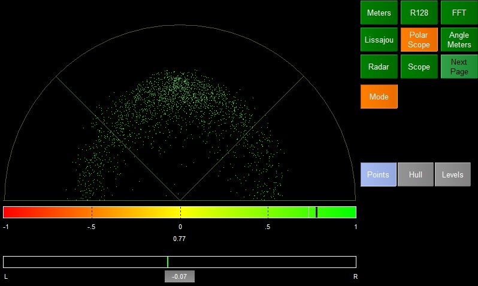
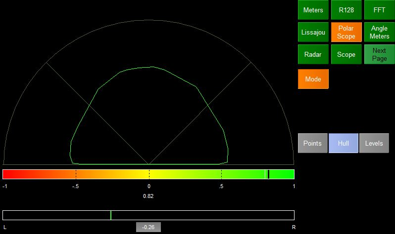

The Polar Scope provides information about the stereo image of the incoming audio. There are 3 sections to the display
Polar Scope
(Depending on mode) this plots a dot per sample but first converts the them in to polar coordinates. The lines at 45 degrees represent safe lines. Dots within these lines are in phase whilst those outside are out of phase.
Phaseometer
Below the polar scope is a phaseometer. The black line in the meter shows the correlation between the left and right channels of the audio.
Below the meter the correlation is shown as a value.
Balance
The lowest meter shows the balance between the left and right channels. If on average the left channel is louder than the right then the green line will be to the left of the center and the value below will be negative.
The polar scope can operate in three modes
Points
Shown at the top of the page - one dot per sample in polar coordinates
Hull

Shows a "hull" that surrounds the dots that would be plotted if the scope was in points mode. This makes it easy to see the stereo image.
Levels
Works out the average phase of each chunk of audio and plots a dot on the scope. A history of average phases is shown as the dots fade slowly from bright green to black.